От Больших Завоеваний к Большим Вопросам: Пост-Титульная Жизнь Чемпионов
Когда Александр Великий в 33 года завоевал мир того времени, он плакал: "Не осталось миров,
которые я мог бы завоевать...". Такой же настрой был у Ларри Скотта в 24, Гарольда Пула в 20, а
также у Билла Перла, Рэга Парка и других великих людей. Эти мужчины уже завоевали великие титулы Мистер
Америка Мистер Мир Мистер Вселенная. У них больше не было миров для завоевания. Они получили
большие титулы, и не могли получить их снова.
Что делать культуристу, который добился весьма впечатляющих результатов в своем виде спорта?
Куда ему деться, если все высшие награды он уже завоевал? Может уйти из спорта? А может попробовать
заняться тренерской деятельностью и воспитать будущего «Мистер Мира»? Такие вопросы задавали себе
многие титулованные спортсмены Им ничего не оставалось делать, как прекратить свои тренировки,
потому что для них пропадал источник мотиваций – выиграть турнир, доказав всем еще раз, что ты лучший
культурист в мире. Ведь были жесткие рамки правил, установленные федерациями IFBB, AAU и NABBA, о том,
что спортсмену запрещается принимать участие в турнире, в котором он когда-то одержал победу.
Для чемпиона – это была настоящая катастрофа, в отличие от новичка, который следуя мечте стать лучшим,
упорно занимался.
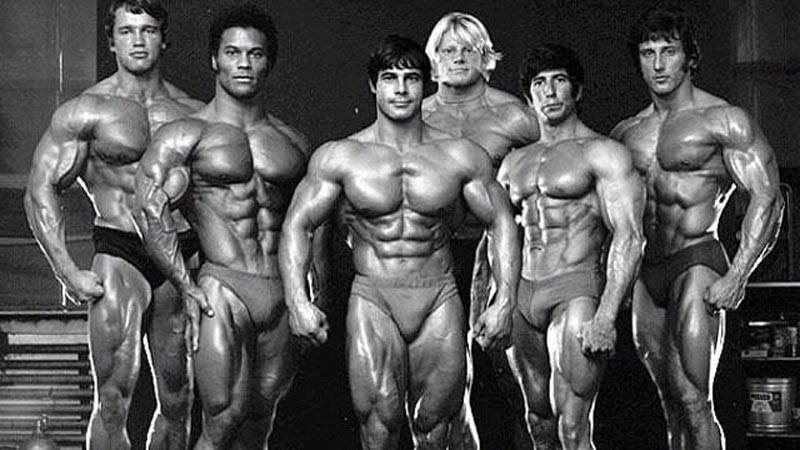
Зарождение Легенды: История Первого Турнира Мистер Олимпия и Наследие Джо Уейдера
Было принято решение создать состязание для великих, благодаря которому из великих мог появиться самый великий.
Дверь спортсмену, не имевшего главного титула соревнований «Мистер Мир», «Мистер Америка» и «Мистер Вселенная»,
была наглухо закрыта. Поначалу победителя нового турнира было решено называть «Мистер Олимпик» (такое решение
было основано согласно результатам опроса), но в июне 1965 года утвердили окончательное название – «Мистер Олимпия».
Первый турнир Мистер Олимпия прошел 18 сентября 1965 года. Его отцом основателем является не так давно ушедший от нас
Джо Уейдер, человек, которому обязаны своим благополучием многие известные спортсмены.
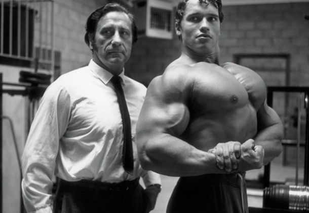
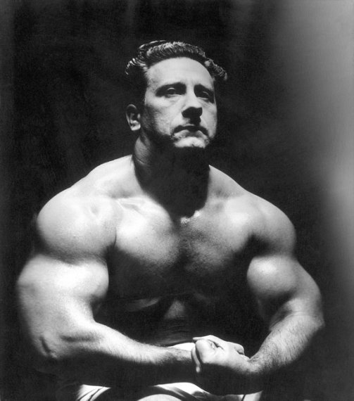
За Кулисами Олимпии: Ларри Скотт и Смена Гвардии
Титул чемпиона в дебютных соревнованиях по праву одержал Ларри Скотт(1), который привлек внимание не только участников,
но и зрителей своим удивительным физическим состоянием, особенно впечатляющими бицепсами. Заслужив титул чемпиона,
он смог удержать его еще один год.Однако в 1987 году Ларри принял решение отказаться от участия в Олимпии, открывая
дорогу новому лицу в мире бодибилдинга - Серджио Оливе(2).
Серджио, прозванный "мифом", стал не просто чемпионом, но и явным лидером, оставив конкурентов далеко позади.
Его физическая форма была настолько выдающейся, что даже в последующем году никто не смог явиться достойным
противником. Спортсмен безупречно утвердился в роли чемпиона, оставаясь непревзойденным в отсутствие серьезной
конкуренции.
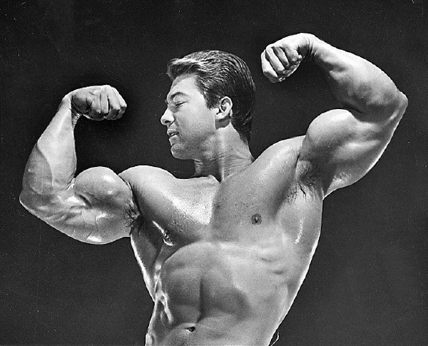
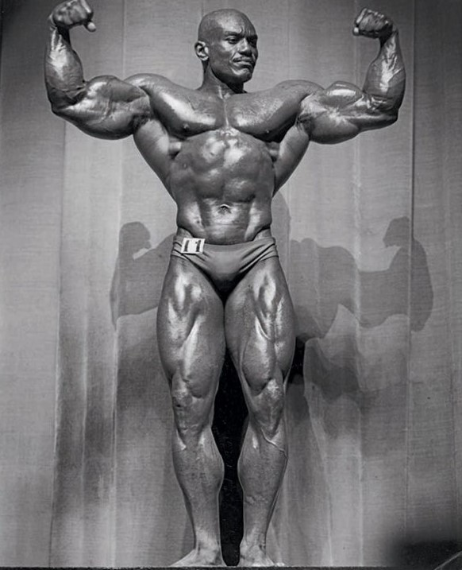
Одно Обещание - Десятки Побед: Арни и Завоевание Титула
Зато год 1969-й стал поистине переломным в истории турнира, поскольку именно тогда мир узнал о человеке по имени Арнольд
Шварцнеггер. Молодой австриец остановился всего в одном шаге от титула, пообещав, что завоюет его уже на следующих
соревнованиях. И Арни сдержал свое слово! В 1970 именно он был признан лучшим бодибилдером в мире, после чего
новоиспеченный победитель сказал в своем интервью, что эта победа является лишь началом его большого пути, и он не уступит
свой титул никому до тех пор, пока будет иметь возможность соревноваться.
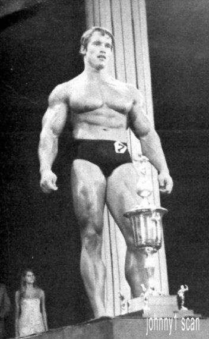
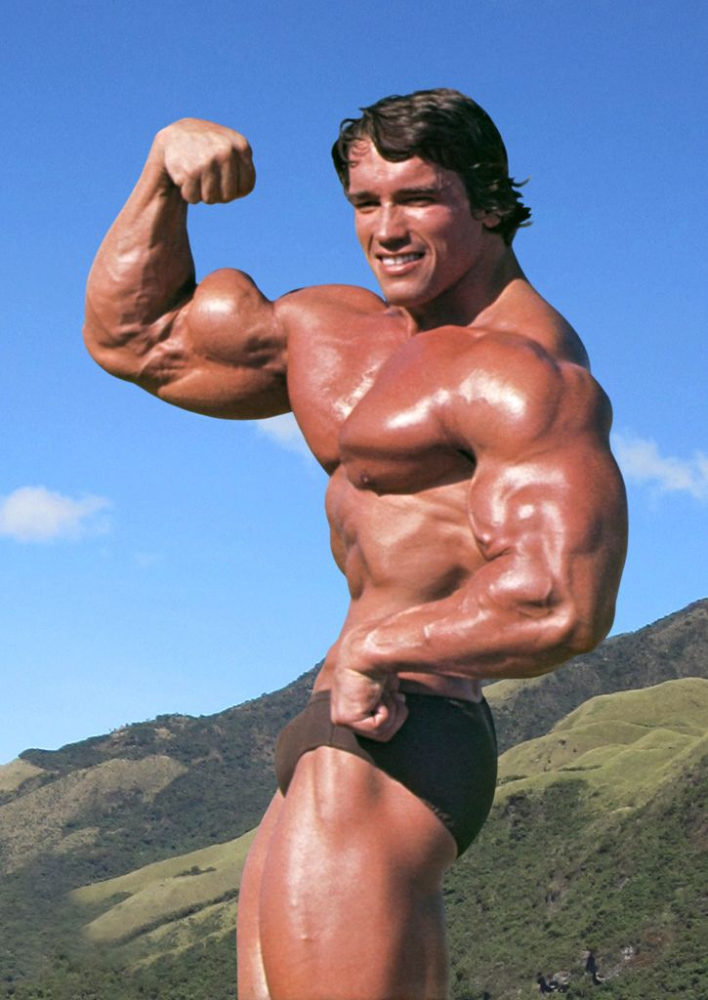
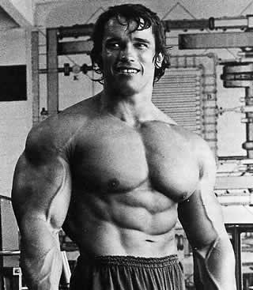
Лу Фериньо: Сила Духа в Мире Бодибилдинга
Противостояние между Арнольдом и Серджио Оливой является одним из наиболее драматичных в истории мирового бодибилдинга.
Так, в 1972 году Арни удалось одержать победу благодаря перевесу всего в один судейский голос. Параллельно в борьбу за самые
высокие места удалось войти Франко Коломбо, однако, пожалуй, наиболее ярким соперником Шварцнеггера, после того, как Серджио
Олива сообщил о своем уходе из соревнований высшего ранга, стал Лу Фериньо, человек, добившийся успеха в жизни не благодаря
чему-то, а вопреки всему.
Вопреки школьным унижениям, проблемам со слухом и речью. Бодибилдинг для Лу стал своего рода отдушиной, позволившей ему
обрести уверенность в себе и не просто выйти на одну сцену с кумиром, а едва не отобрать у него титул. И пусть ему не
удалось этого сделать ни в 1974-м, ни в 1975-м, Лу, тем не менее, навсегда вписал свое имя в историю мирового бодибилдинга.
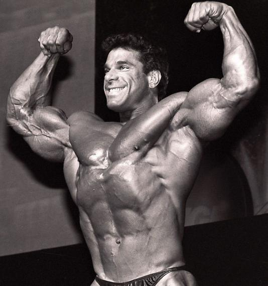
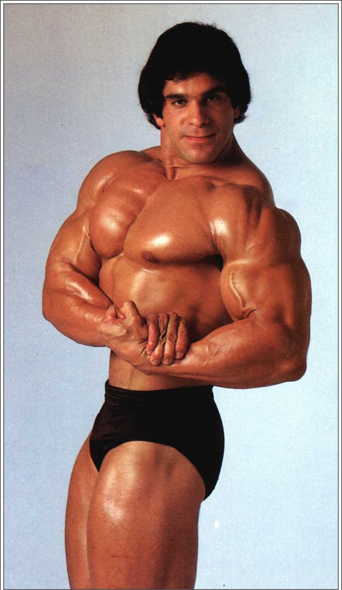
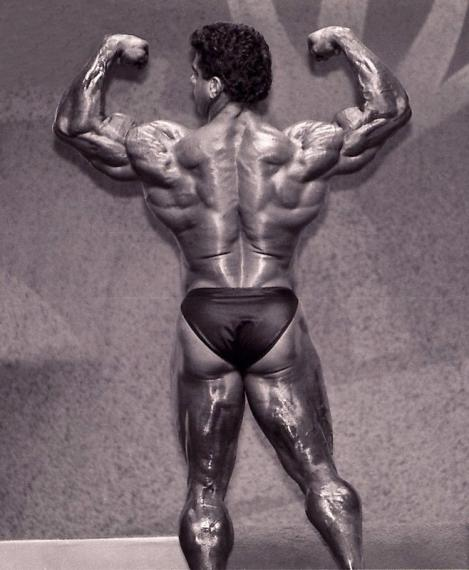
Эра Непревзойденного Арнольда: Путь к Титулу и Передача Эстафеты Франко Коломбо
А между тем, Эра Арнольда продолжалась. С 1970-го и вплоть по 1975 год никому так и не удалось превзойти
австрийца. Лишь после того, как Железный Арни объявил о своем уходе, сконцентрировавшись на работе в шоу-бизнесе, столь
долгожданный титул удалось получить его другу Франку Коломбо. Оба атлета прошли свой путь в бодибилдинге буквально
плечом к плечу, познакомившись в 1965 году в Германии. До того молодой Франко серьезно занимался боксом, однако
инцидент, произошедший в одном из боев, когда парень едва не убил своего соперника ударом, заставил его оставить
данный вид спорта, и встреча с Арни стала судьбоносным моментом в его последующей жизни.
Коломбо, помимо своей потрясающей мускулатуры, знаменит также выдающимися, как для классического бодибилдера силовыми
показателями, в лучшие годы его сумма в троеборье составляла почти 900 кг. К большому сожалению, именно это в определенном
роде сыграло с Франко злую шутку, вскоре после Олимпии он очень серьезно травмировался на силовых состязаниях, получив
запрет от врачей на тренировки. Тем триумфальнее стало возвращение Франко спустя пять лет, когда в 1981 году он вновь
завоевал титул Мистера Олимпия, опять же, последовав примеру своего друга, которому удалось это сделать годом ранее.
Стоит отметить, что подобные камбэки вдвойне заслуживают уважения по той причине, что за несколько лет, в конце 70-х,
популярность Олимпии существенно возросла, а вместе с ней выросла и конкуренция.
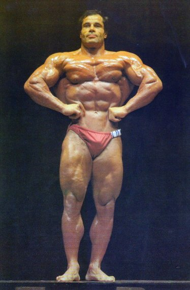
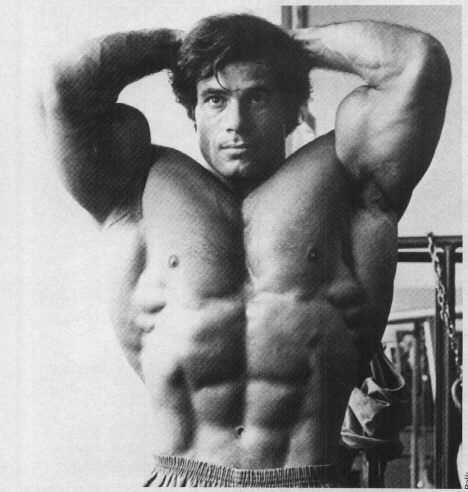
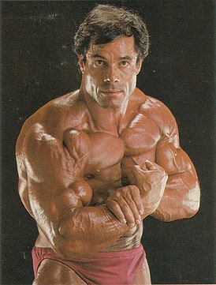
Секреты Успеха: Психология и Пропорции в Подвигах Фрэнка Зейна
1977-й, 78-й и 79-й года стали эпохой Фрэнка Зейна. Человека, которому удалось заполучить титул Мистера
Олимпия в первую очередь благодаря бешеной целеустремленности, сформировавшейся у парня не в последнюю очередь за счет
учебы на психологическом факультете. В его случае этот фактор стал одним из решающих, поскольку сам Фрэнк -
ярко выраженный эктоморф, из-за чего ему еще на заре карьеры пришлось оставить идею стать огромным. Основной упор
Зейн сделал на развитие эстетики своего тела, проработку рельефа, достигнув практически идеальных пропорций. А
посему и титулы Мистер Олимпия его выглядят вполне заслуженно.
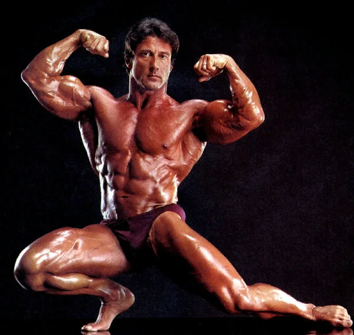
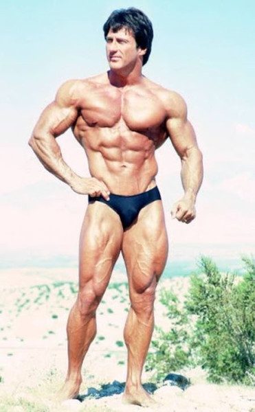
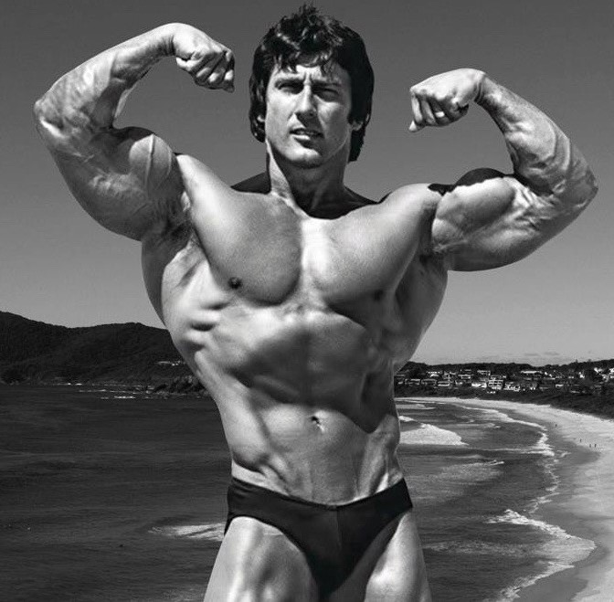
Олимпийский Камбэк: Арнольд Шварцнеггер и Буря Эмоций на Олимпии 1980
Если начиная с момента своей первой победы на протяжении следующих двух лет Зейн постоянно улучшал свою форму,
то перед Олимпией 1980 года он уже отнюдь не выглядел фаворитом соревнований. Колоссальную подготовку зато провел Майк
Ментцер(1), уступивший титул чемпиона Зейну годом ранее. Не отставали от своих конкурентов также Бойер Коу(2) и Крис Дикерсон(3).
Но главной сенсацией соревнований стало не что иное, как возвращение Арнольда Шварцнеггера, о котором он объявил буквально
за несколько недель до турнира, уделив подготовке к нему всего-то около двух месяцев.
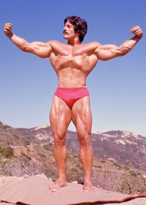
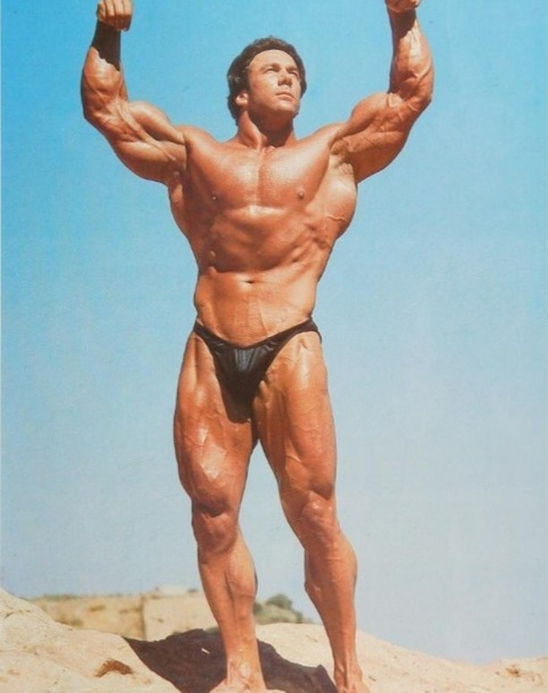
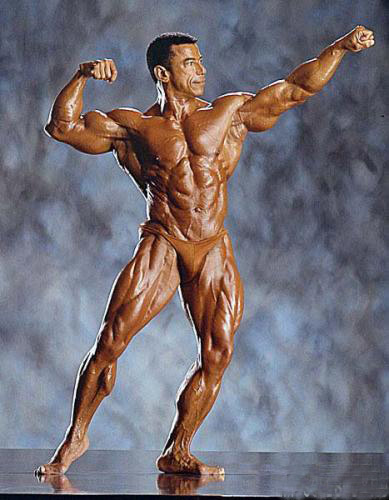
Многие восприняли скептически подобное решение, считая, что у Арни нет шансов, а между тем напряжение все
нарастало. С Ментцером Арнольд едва не подрался во время одного из официальных заседаний, во время которого решалось,
стоит ли отменять разделение по весовым категориям. Шварц выступал против, очевидно, боясь, что не сможет обойти в общем
зачете атлета с меньшим весом. В ходе переговоров он все же согласился с другими участниками, что формат следует оставить
таким, каким он есть, однако все почувствовали, что обстановка накалилась до предела. Возможно, именно на это и делал
упор Арни, пытаясь вызвать растерянность среди оппонентов, что, собственно, и произошло. Напряжение, витавшее в воздухе,
чувствовалось и на сцене, особенно, когда после первого раунда позирования Арни захватил лидерство, при том, что оценки
судей выглядели довольно противоречиво. Реакция публики на итоговую победу Арнольда ясно давала понять, что далеко не
все считали его первое место заслуженным, а оппоненты не стеснялись в своих выражениях.
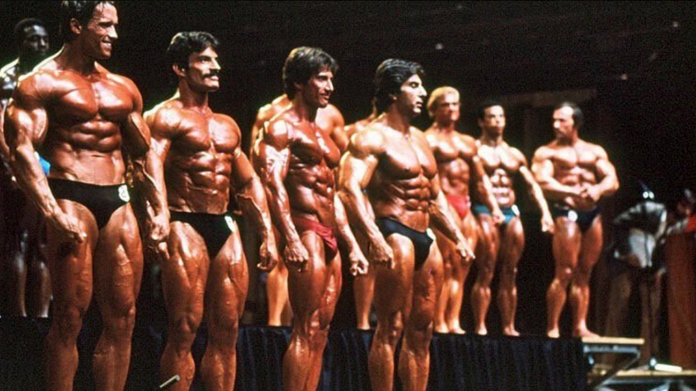
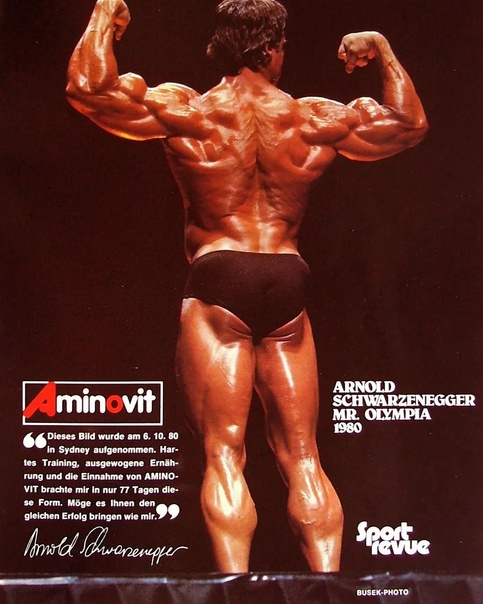
Бойер Ко съязвил в интервью насчет "куриных ног" Арнольда, а Майк Ментцер грязно выругался прямо на сцене.
Фрэнк Зейн, скорее всего, понимал, что отсутствие массы не позволило бы ему в четвертый раз подряд выиграть титул, но и
то, что победителем стал именно Арни, по душе ему явно не пришлось. Отдельные эксперты после соревнований говорили, что
для Арнольда с его формой счастьем на Олимпии-1980 по-хорошему должно было стать даже попадание в пятерку. Люди же,
лояльные к Арнольду, отметили, что у каждого из участников были свои плюсы и минусы, Арнольд же переиграл своих
конкурентов, прежде всего, как шоумэн, на психологическом уровне. Так и есть, во время выступления он постоянно
заводил публику, становился на те участки сцены, где игра освещения на его мускулатуре была наиболее выгодной и
применял другие подобные приемы.
"Послевкусие" Олимпии 1980-го года дает о себе знать даже сегодня, в наши дни. Продолжаются и будут
продолжаться споры о том, справедливо ли Арнольд одержал победу, при этом каждая из сторон приводит свои аргументы,
отстаивая то или иное мнение. Вместе с тем, большинство профессионалов предпочитают не вспоминать самые скандальные
в истории бодобилдинга соревнования, постоянно уклоняясь от ответов. Особенно это относится к непосредственным
участникам того самого турнира. Как бы то ни было, триумф Шварцнеггера - это уже сложившийся факт, вошедший в
историю, и раз уж он вызвал такой резонанс, значит, поистине бодибилдинг - это больше, чем спорт.
Эволюция Олимпии: Арнольд Шварцнеггер и Завершение Эпохи
Одержав свою седьмую победу на Мистере Олимпия, Арни объявил о том, что окончательно завершает выступления на этом
турнире, став одним из его основных организаторов. Во многом благодаря его усилиям призовой фонд соревнований вырос
в десятки раз, что существенно подняло престиж конкурса и его популярность в мире. В 1982-м титул завоевал Крис
Дикерсон, годом спустя триумфатором стал Самир Баннут, для которого эта победа является единственным серьезным
достижением в карьере. Уже на этих соревнованиях судьи и зрители высоко оценили молодого Ли Хейни, будущего
рекордсмена по количеству званий Мистер Олимпия.
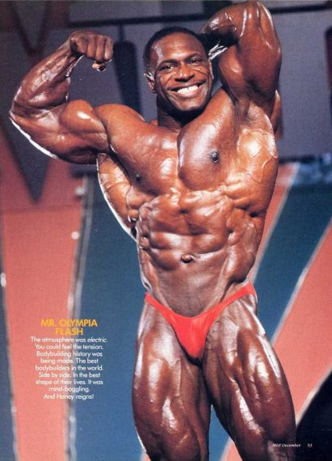
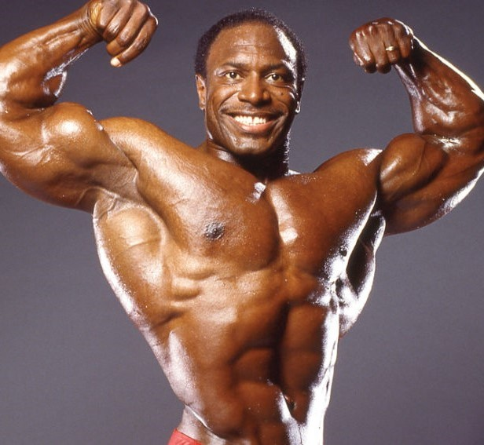
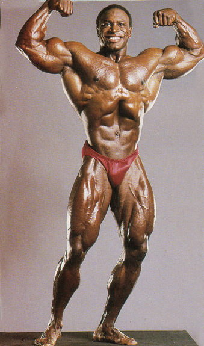
Свой победный путь он начал в 1984-м году, получив за первое место $ 100 000 - самый большой на тот момент
гонорар в истории Олимпии. Ли Хейни представлял собой идеальное сочетание массы и рельефа. Он был не просто
большим, он был идеально сложенным большим. Гегемония Ли продлилась до 1991 года включительно, при этом серьезные
конкуренты в лице Ли Лабрады(1), Винса Тейлора(2), Дориана Ятса(3) и Шона Рэя(4) появились у него не раньше 1989-го. На
Олимпии-1991 Хейни удалось вырвать победу у Ятса лишь в последний момент, и именно после данного триумфа он
заявил, что завершает свои выступления на этих соревнованиях. Восемь побед подряд - это действительно великий
результат, благодаря которому многие люди считают Ли Хейни лучшим бодибилдером в истории мирового спорта.
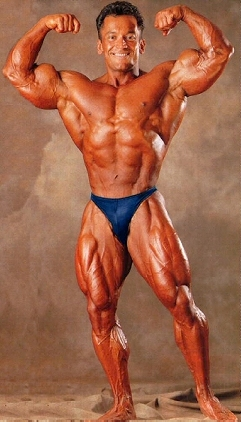
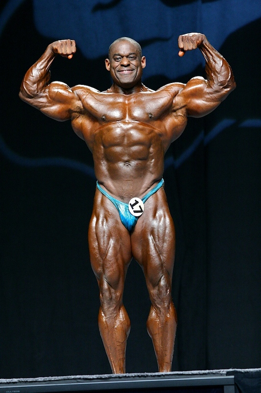
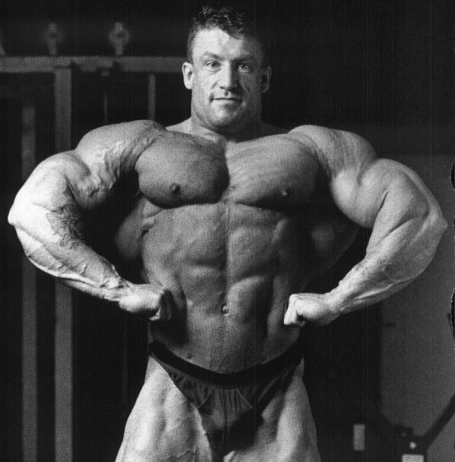
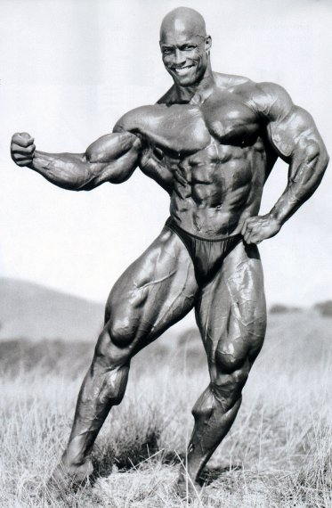
Дориан Ятс: Эпоха Массивности и Недосягаемости
Период 1992-1997-х годов стал эпохой Дориана Ятса. В среде спортсменов считается, что именно он
привнес в мир бодибилдинга "моду на массу", и далеко не каждый считает этот факт положительным. Впрочем,
даже противники чересчур массивных атлетов ничуть не умаляют достижений британца, как в свое время и его
оппоненты, признававшие, что Ятс в середине 90-х был недосягаем. Притом, что в 1994 году ему пришлось
приложить титанические усилия, чтобы восстановиться от тяжелой травмы, полученной за 9 недель до состязаний,
да и на пятки Дориану из года в год наступали все более серьезные оппоненты, такие, как Нассер эль Сонбати(1),
Шон Рей и Кевин Леврон(2). Впрочем, подвинуть Ятса с пьедестала удалось не им, а полицейскому по имени Ронни
Коулмен - атлету, которому нет равных по массе среди всех спортсменов, когда-либо принимавших участие в Олимпии.
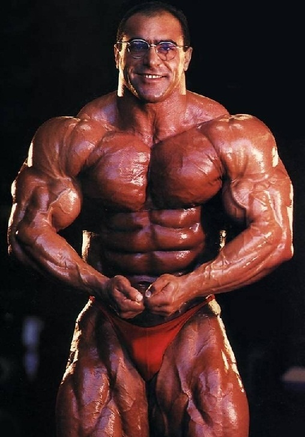
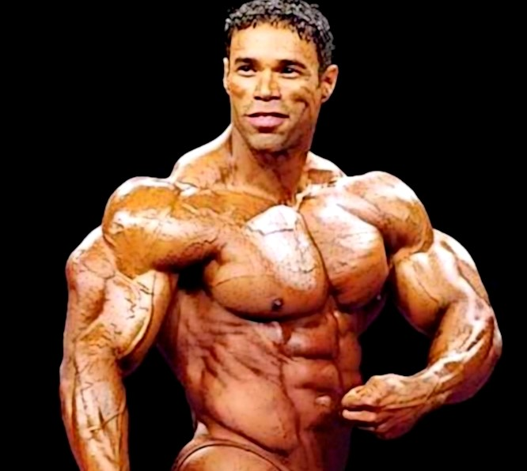
Этот Коп Больше, Чем Его Тачка !
Во время своей первой победы Ронни весил 121 кг, впоследствии же соревновательный вес Ронни доходил почти до 140 кг.
Примечательно, что на тот момент Коyлмен уже был отнюдь не молод, что все же не помешало ему оставаться триумфатором в течение
еще последующих семи лет, за время которых он постоянно улучшал свою физическую форму. Кевину Леврону оставалось
лишь вторыми и третьими местами, которые, с учетом прогресса Ронни, были потолком и для всех остальных участников
конкурса. Лишь в 2006-м году обойти "самого большого в мире копа" сумел Джей Катлер, единственный на сегодняшний день
обладатель титула Мистер Олимпия, вернувший его себе после проигрыша, а не ухода и обратного возвращения в спорт, как это
сделали Шварценеггер и Коломбо.
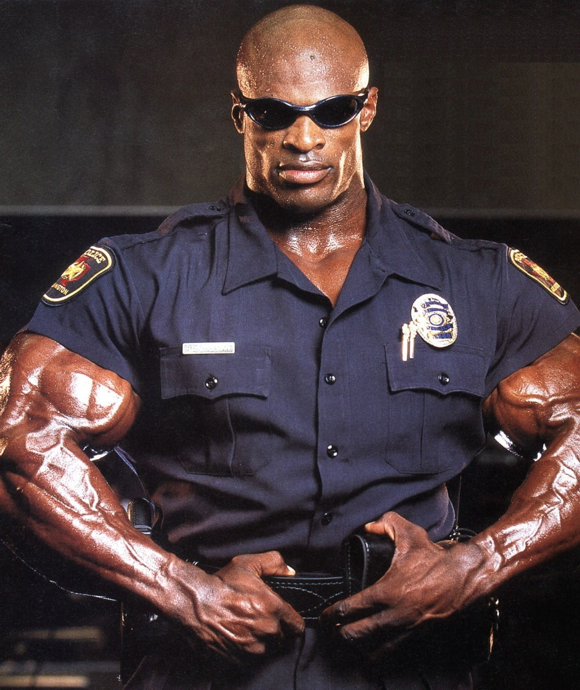
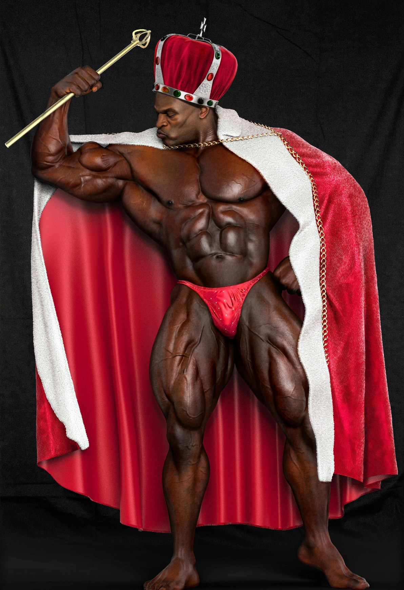
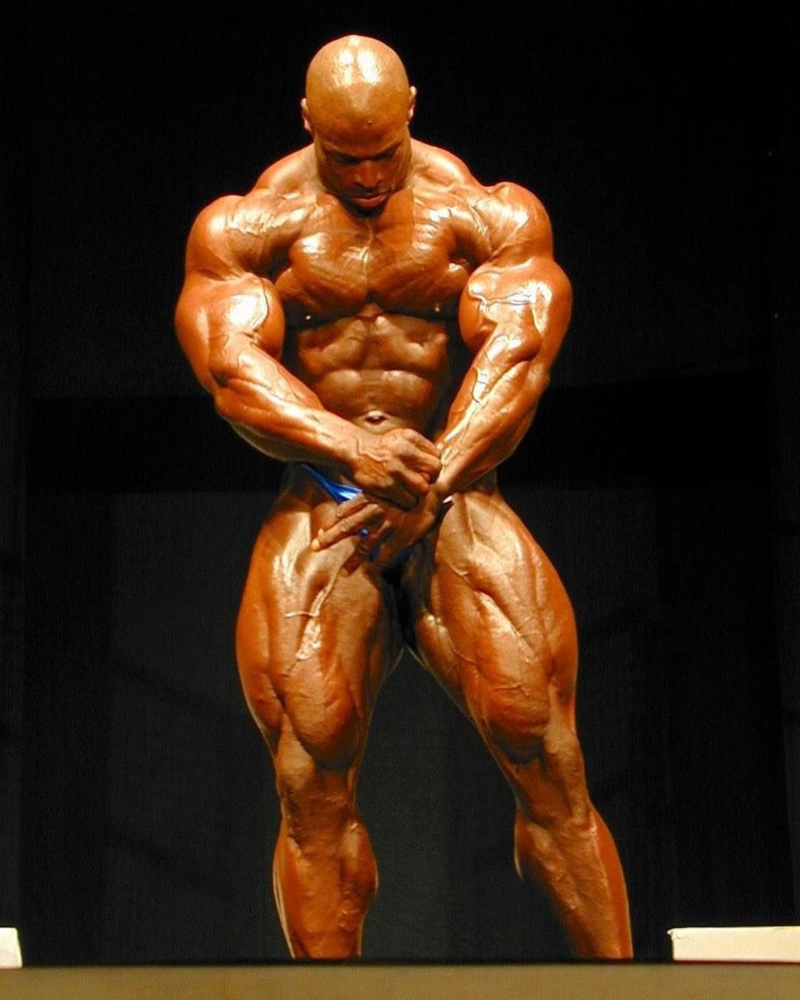
Новая эра Мистера Олимпии
Всего в коллекции Джея Катлера(1) победы в конкурсе - 2006, 2007, 2009 и 2010 годов. "Разбавил" сей цикл Декстер Джексон (2),
атлет, поразивший зал своим великолепным рельефом еще во время второй победы Джея Катлера. Коллеман к тому времени постепенно
начал сдавать, заняв на соревнованиях 2007 года лишь четвертое место, а основную конкуренцию Джею Катлеру составил спортсмен
из Доминиканской Республики - Виктор Мартинез(3). Тем не менее, Ронни вызвал, пожалуй, самые бурные овации зрителей, как человек,
повторивший рекорд Ли Хейни по числу завоеванных титулов, что, безусловно, является колоссальным достижением.
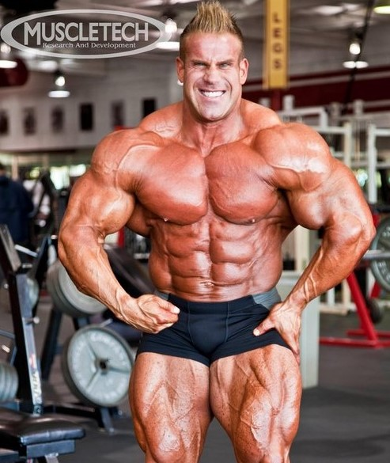
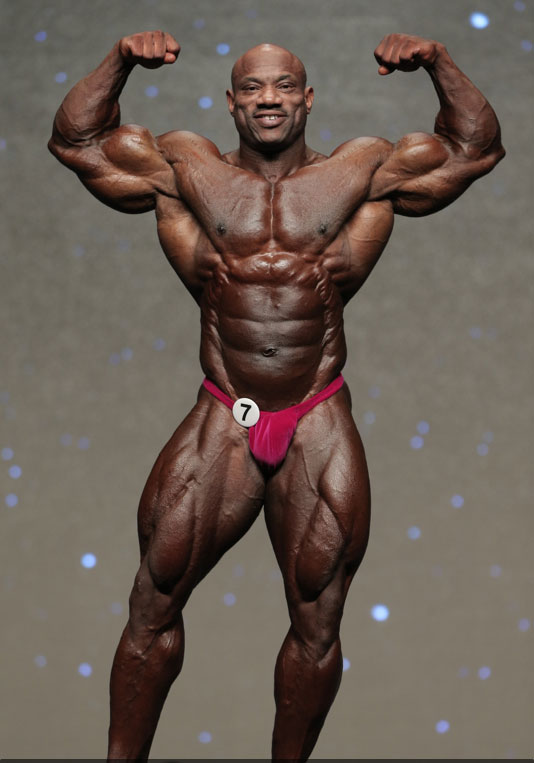
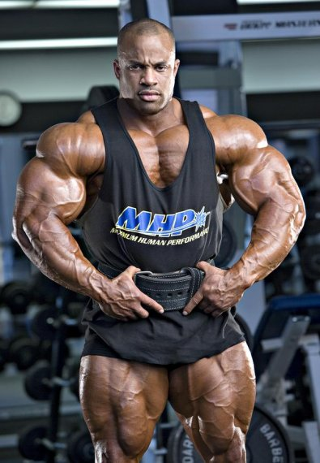
В свою очередь, Декстер Джексон, сделавший соответствующие выводы, вышел на пик своей формы в 2008 году, показав всему
миру, какой должна быть идеальная прорисовка мускулатуры. И пусть эта победа до сих пор остается единственной в его
карьере, значимость ее переоценить трудно. Как, собственно, и той, которую годом позже одержал Джей Катлер. Вес данной
виктории во многом подкрепляется тем, что именно в 2010-м году в соревнованиях принимал участие ряд спортсменов, по
праву считающими одними из лучших во всей истории бодибилдинга. Кроме самого Катлера, за титул боролись все те же Декстер
Джексон и Виктор Мартинез, а также Денис Вольф(1), Кай Грин(2), Бренч Уоррен(3) и Фил Хит(4). Именно последний стал "преемником"
Джея Катлера на высшей ступени пьедестала почета. Сам Катлер послужил идейным вдохновителем этого невысокого парня из
Сиэтла, увидев в нем будущего чемпиона на одном из региональных соревнований. Спортсмены постоянно поддерживают друг
друга на турнирах, вместе радуются победам, показывая всему миру, что бодибилидинг по-настоящему объединяет, и даже
являясь соперниками, на сцене, можно быть хорошими друзьями в жизни.
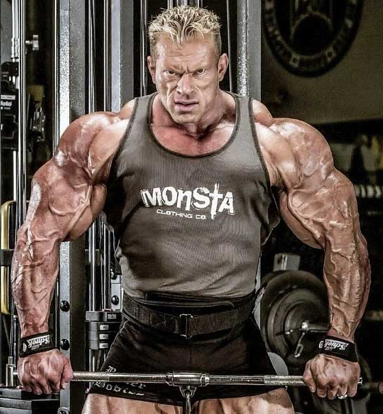
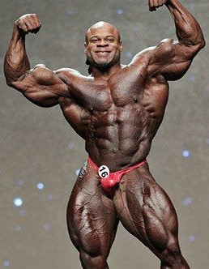
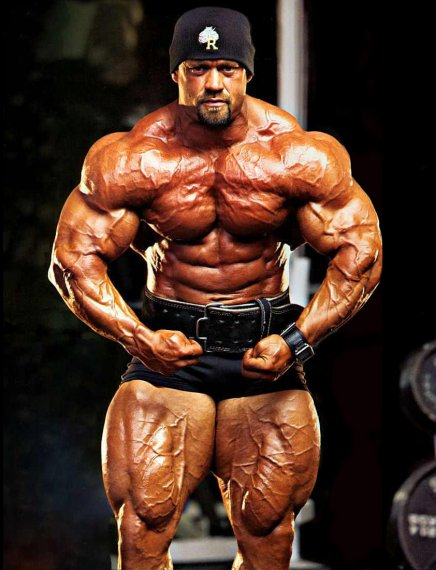
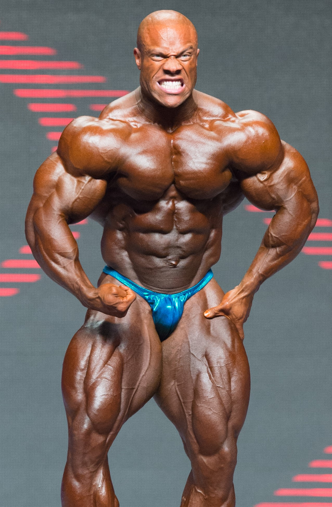
Новые Горизонты
Интерес к Олимпии с каждым годом только увеличивается, чему способствует постоянно возрастающая конкуренция.
Текущий фаворит публики - Крис Бамстед(1) хоть и не победил в основной категории турнира, но все равно продолжает
удивлять своей формой и прогрессом, однако и остальные, в лице текущего чемпиона Дерека Лансфорда(2), дышащего ему в пятки
Хади Чупана(3) ни чуть ему не уступают.А это значит лишь одно - вскоре мы увидим еще множество ярких и эмоциональных
противостояний, которые останутся в нашей памяти на долгие годы!